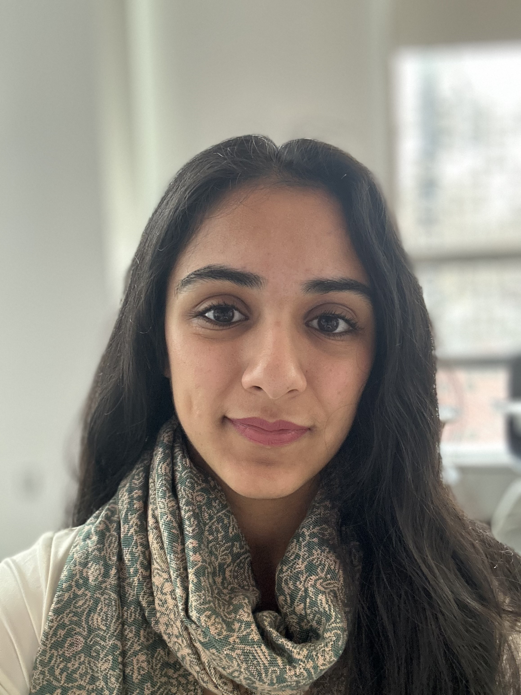

Northeastern University
I'm a third-year Computer Science student with a minor in Robotics at Northeastern University. My research spans Human-Robot Interaction and Animal-Computer Interaction, with work published at HRI '26 and CHI '26.
I work in the PARCS Lab (Prof. Zhi Tan) studying how robots interact with people, and the INTERACT Animal Lab (Prof. Rebecca Kleinberger) designing technology for animals.
Investigating how robots can interact more naturally and effectively with people, exploring how physical and social presentation shapes human willingness to engage.
Designing and evaluating technology systems built for and with animals, expanding the circle of who computing is designed for.